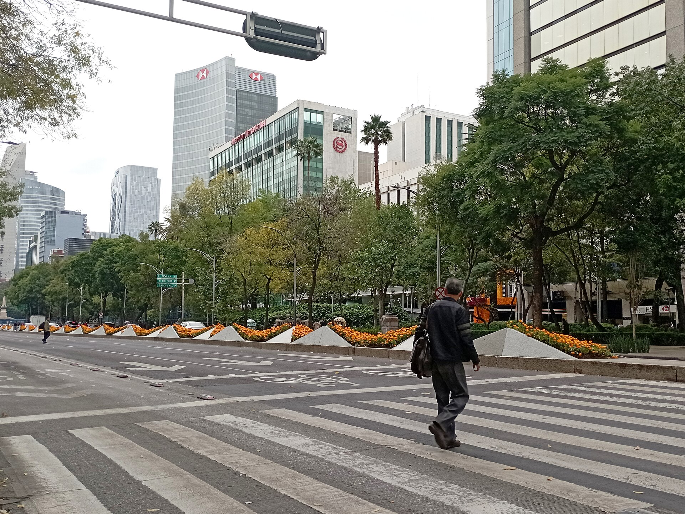
Entendemos tu objetivo
Qué quieres lograr, a quién le hablas y dónde está esa audiencia. Antes de proponer un espacio, entendemos el negocio.
index.html → Open with Live Server.grupodeharo: python3 -m http.server 8765 y abre http://localhost:8765.
Casi 50 años poniendo marcas donde México mira: más de 750 espacios en seis ciudades, del parabús a la pantalla digital.
Kioscos a pie de calle en esquinas de alto tráfico peatonal. La marca a la altura de los ojos, todos los días.
Kioscos con pantallas digitales: creatividades que cambian por horario, zona o audiencia.
Gran formato sobre vialidades primarias y puentes. Imposible de ignorar para miles de conductores.
Mobiliario urbano en paradas de transporte, con tiempos de exposición largos frente a pasajeros y peatones.
Carteleras iluminadas en avenidas y camellones, visibles de día y de noche.
Intervenciones fuera de formato: forrados, extensiones y piezas 3D que se vuelven noticia.

Qué quieres lograr, a quién le hablas y dónde está esa audiencia. Antes de proponer un espacio, entendemos el negocio.
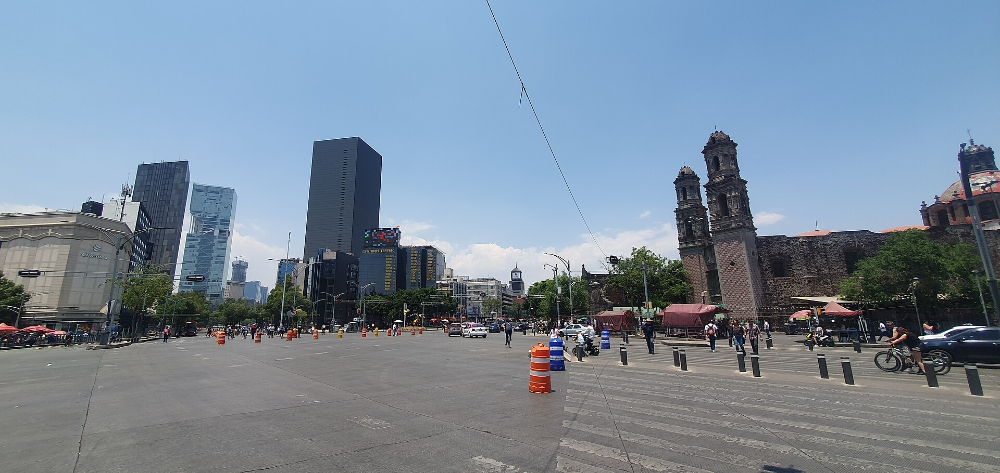
Combinamos formatos, ubicaciones y tiempos para que tu marca aparezca en el recorrido diario de tu cliente.
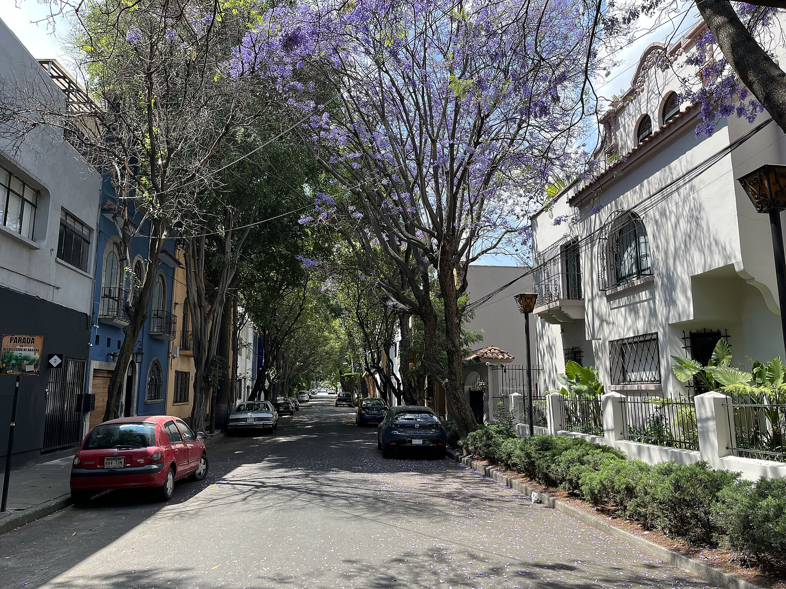
Instalamos con permisos en regla, damos seguimiento de principio a fin y te entregamos resultados medibles.
750+espacios publicitarios
25%en venta programática
El 25% de nuestro inventario en CDMX y Estado de México está disponible en venta programática, con medición de audiencia en tiempo real. Activa, ajusta y optimiza tu campaña sin esperar al cierre del mes.
Quiero activar DOOH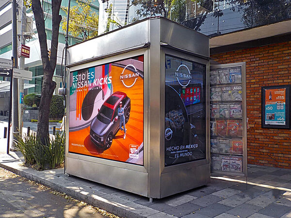
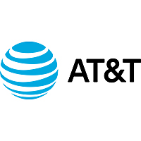
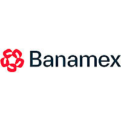
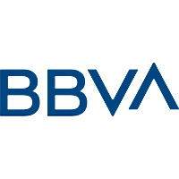
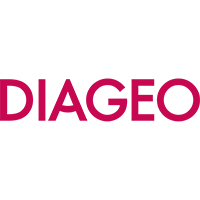
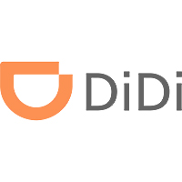
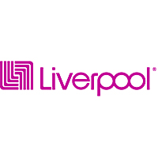
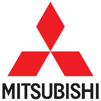
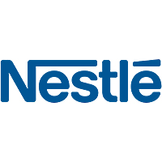
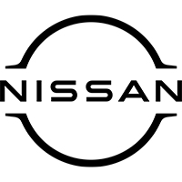
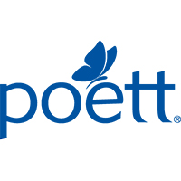
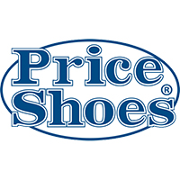
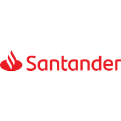
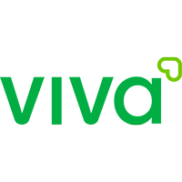
Desde hace casi cincuenta años ponemos marcas en el lugar exacto: donde la gente camina, espera, maneja y voltea.
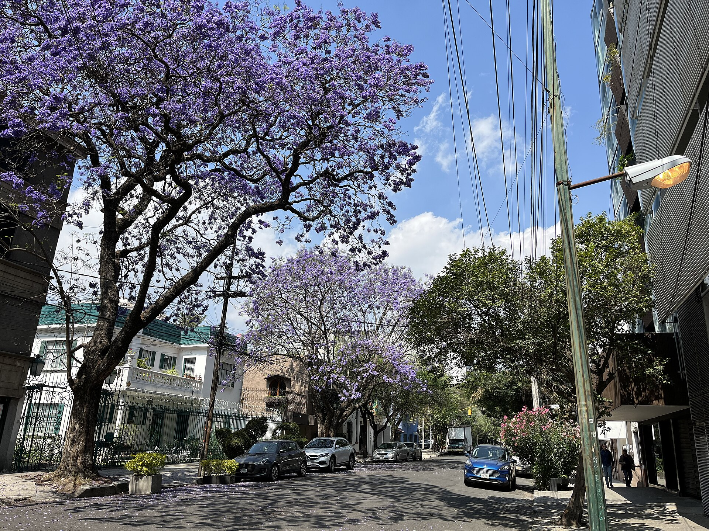